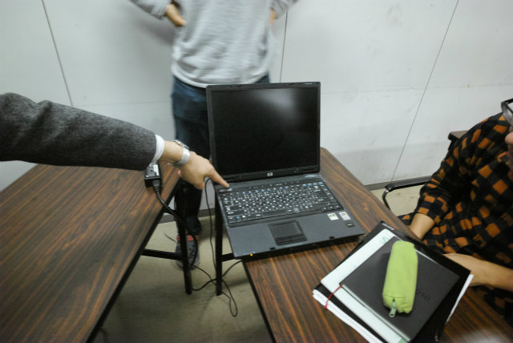
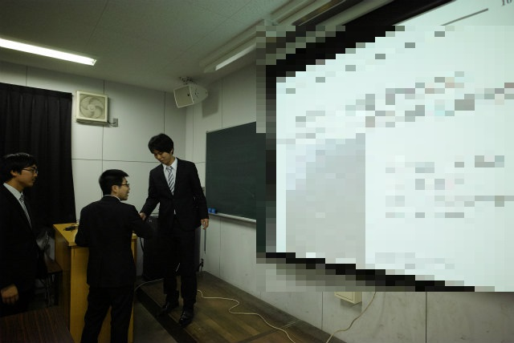
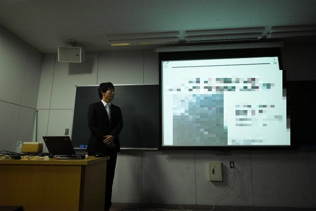
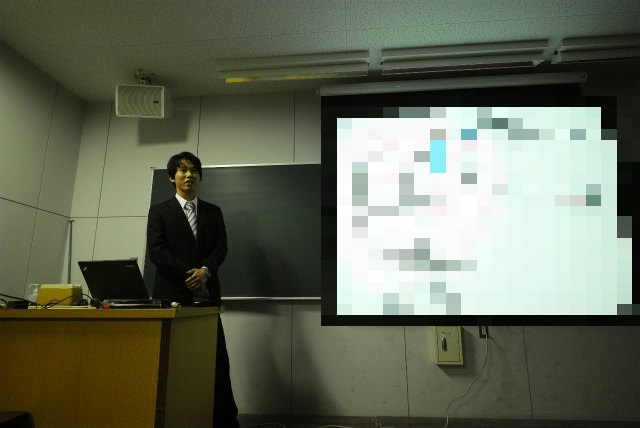
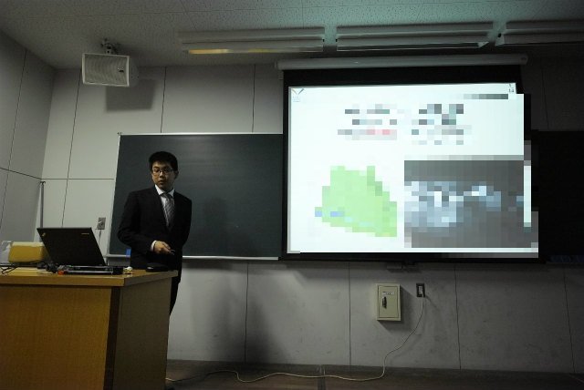
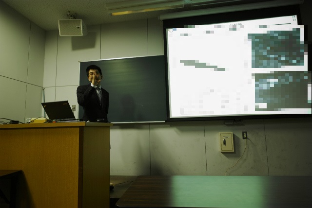
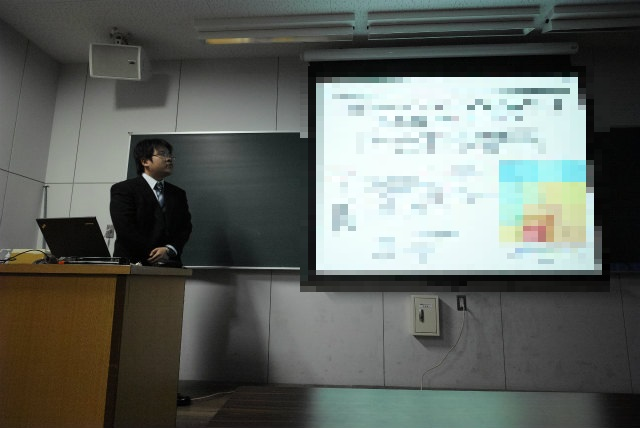
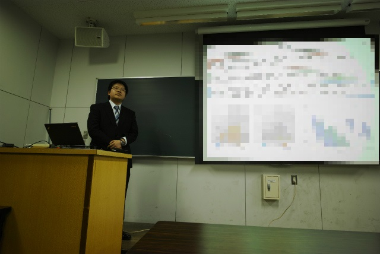
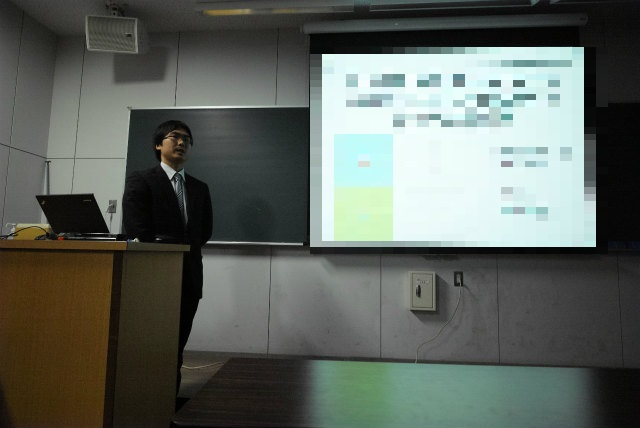
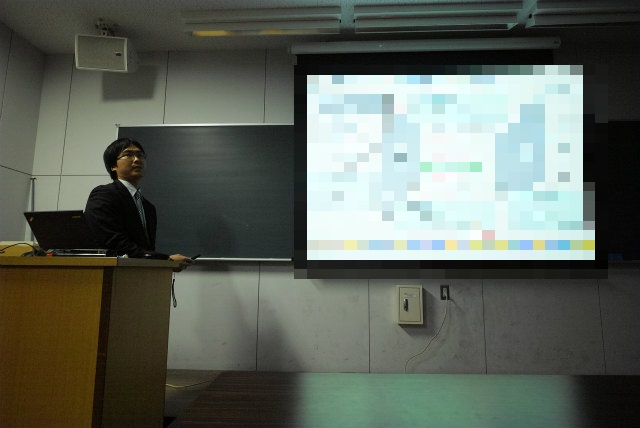

| ・ 平成27年度卒業論文発表会 (H28.02.15) | |||
去年は6人でしたが，今年は4人発表です．今年から3×3教育の関係で学系全体での卒業論文発表会ではなくなり，基本的に研究室ごとで発表会を実施します．計測・制御系の4研究室は増田先生の呼びかけで合同発表会になりました．学生からも質問があり，かなり盛り上がりました．今回村田先生は外せない学務のため，助教の人が計測研の司会担当でした．写真はM1のTNくん担当です．スライドのモザイクは来月の卒論講演会で発表するのでかけています（いつもスライド分からないように撮ってるんです！）． |
|||
|

珍しく助教の人がスーツ着てたのに腕だけ撮影 |

準備中 | ||
|

KNくんから |

実際の話ですね | ||
|

次はH谷川くん |

質疑スライドばっちり準備 | ||
|

そしてF井くん |

ロボコンの経験が活きたテーマ | ||
|

最後はY岡くん |

時間は守ろう | ||